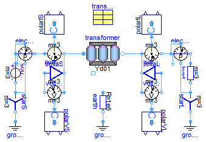

Extends from Modelica.Icons.ExamplesPackage (Icon for packages containing runnable examples).
| Name | Description |
|---|---|
| Transformer Testbench |
 Modelica.Electrical.QuasiStationary.Machines.Examples.TransformerTestbench
Modelica.Electrical.QuasiStationary.Machines.Examples.TransformerTestbench
Extends from Modelica.Icons.Example (Icon for runnable examples).
| Type | Name | Default | Description |
|---|---|---|---|
| Resistance | RL[3] | fill(1/3, 3) | Load resistance [Ohm] |
model TransformerTestbench "Transformer Testbench" extends Modelica.Icons.Example; parameter Modelica.SIunits.Resistance RL[3]=fill(1/3,3) "Load resistance";QuasiStationary.MultiPhase.Sources.VoltageSource source(f=50, V=fill(100/ sqrt(3), 3)); QuasiStationary.MultiPhase.Basic.Star starS; QuasiStationary.SinglePhase.Basic.Ground groundS; QuasiStationary.MultiPhase.Sensors.PowerSensor electricalPowerSensorS; QuasiStationary.MultiPhase.Sensors.CurrentSensor currentSensorS; ComplexBlocks.ComplexMath.ComplexToPolar polarIS[3]; QuasiStationary.MultiPhase.Sensors.VoltageSensor voltageSensorS; ComplexBlocks.ComplexMath.ComplexToPolar polarVS[3]; QuasiStationary.MultiPhase.Basic.Delta deltaS; QuasiStationary.SinglePhase.Basic.Resistor earth(R_ref=1e6); QuasiStationary.SinglePhase.Basic.Ground groundT; QuasiStationary.MultiPhase.Sensors.VoltageSensor voltageSensorL; ComplexBlocks.ComplexMath.ComplexToPolar polarVL[3]; QuasiStationary.MultiPhase.Basic.Delta deltaL; QuasiStationary.MultiPhase.Sensors.CurrentSensor currentSensorL; ComplexBlocks.ComplexMath.ComplexToPolar polarIL[3]; QuasiStationary.MultiPhase.Sensors.PowerSensor electricalPowerSensorL; QuasiStationary.MultiPhase.Basic.Resistor load(R_ref=RL); QuasiStationary.MultiPhase.Basic.Star starL; QuasiStationary.SinglePhase.Basic.Ground groundL; Modelica.Electrical.Machines.Utilities.TransformerData transformerData( C1=Modelica.Utilities.Strings.substring(transformer.VectorGroup, 1, 1), C2=Modelica.Utilities.Strings.substring(transformer.VectorGroup, 2, 2)); QuasiStationary.Machines.BasicMachines.Transformers.Yd.Yd01 transformer( n=transformerData.n, R1=transformerData.R1, L1sigma=transformerData.L1sigma, R2=transformerData.R2, L2sigma=transformerData.L2sigma); equationconnect(starS.pin_n, groundS.pin); connect(source.plug_n, starS.plug_p); connect(starL.pin_n, groundL.pin); connect(load.plug_n, starL.plug_p); connect(source.plug_p, electricalPowerSensorS.currentP); connect(electricalPowerSensorS.currentP, electricalPowerSensorS.voltageP); connect(electricalPowerSensorS.currentN, currentSensorS.plug_p); connect(currentSensorS.plug_n, transformer.plug1); connect(transformer.plug2, currentSensorL.plug_p); connect(currentSensorL.plug_n, electricalPowerSensorL.currentP); connect(electricalPowerSensorL.currentP, electricalPowerSensorL.voltageP); connect(electricalPowerSensorL.currentN, load.plug_p); connect(electricalPowerSensorL.voltageN, starL.plug_p); connect(electricalPowerSensorS.voltageN, starS.plug_p); connect(earth.pin_n, groundT.pin); connect(deltaS.plug_p, voltageSensorS.plug_n); connect(deltaS.plug_n, voltageSensorS.plug_p); connect(currentSensorS.plug_n, deltaS.plug_n); connect(deltaL.plug_p, voltageSensorL.plug_n); connect(deltaL.plug_n, voltageSensorL.plug_p); connect(currentSensorL.plug_p, deltaL.plug_n); connect(polarIS.u, currentSensorS.y); connect(polarIL.u, currentSensorL.y); connect(voltageSensorS.y, polarVS.u); connect(voltageSensorL.y, polarVL.u); end TransformerTestbench;